プレ・クリスマス・スタディ2014平成26年12月21日(日)、岡山理科大学21号館3F図書館で、小学生を対象に、プレ・クリスマス・スタディが開催されました。 （低学年）読み聞かせ、ゲーム （高学年）2学期の復習 （共 通）工作：牛乳パックのクリスマスツリー 協力：児童文化部 子供たちは、児童文化部のお兄さんの紙芝居に、釘付けです。 まずは、20の扉という言葉を使うゲームです。やっているうちにどんどん白熱していきました。 次に、妖怪体操第1をする予定でしたが、CDデッキが故障するという不測の事態。じゃんけん電車をすることになりました。 その頃、4年生の子達は、理大のお兄さんと・お姉さんとマンツーマンで、2学期の復習に励んでいました。 休憩をした後、牛乳パックを材料に、マジックで様々な模様をつけたクリスマス・ツリーを皆でつくりました。 皆、集中してなかなか緻密な模様の大作に挑む子もいました。 予定時間をオーバーしましたが、クリスマスツリーの完成です。  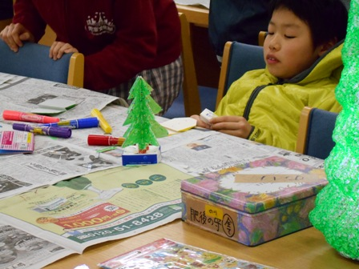
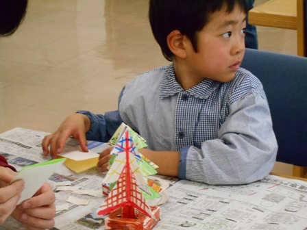
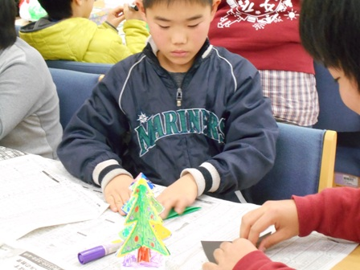
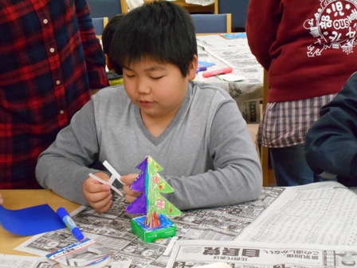
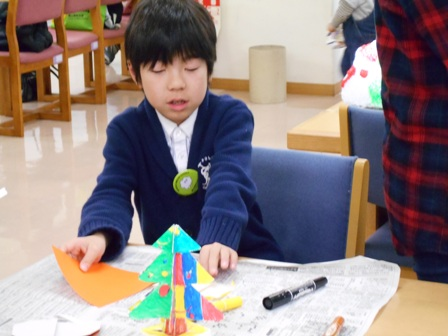
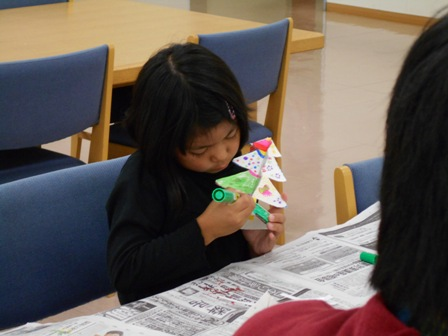
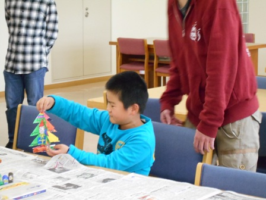
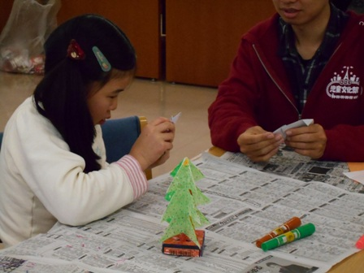
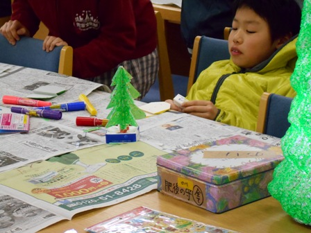
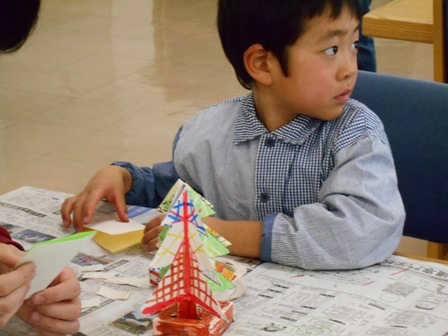
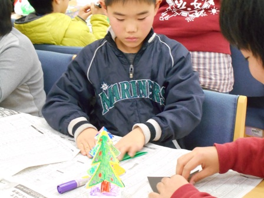
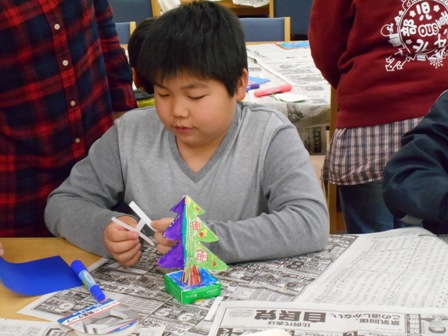
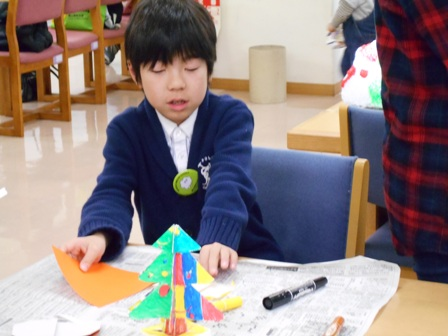
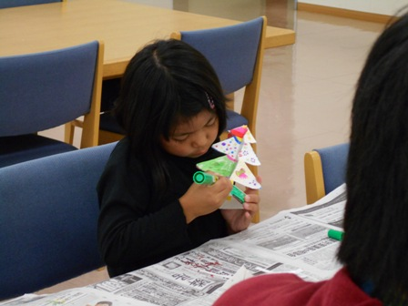
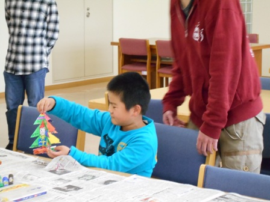
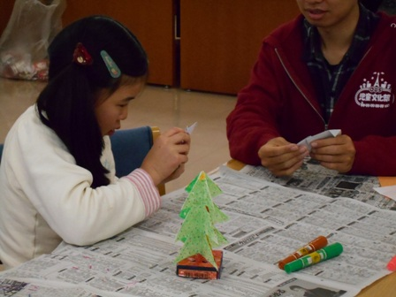
|